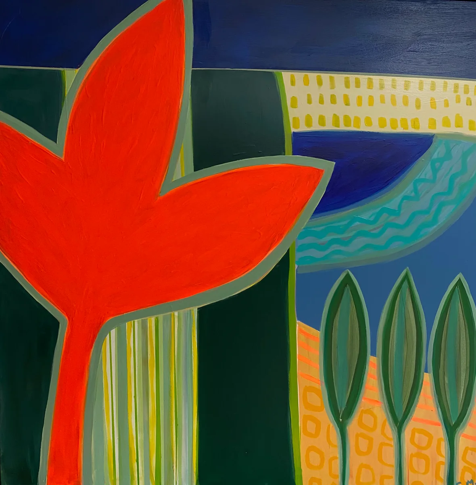
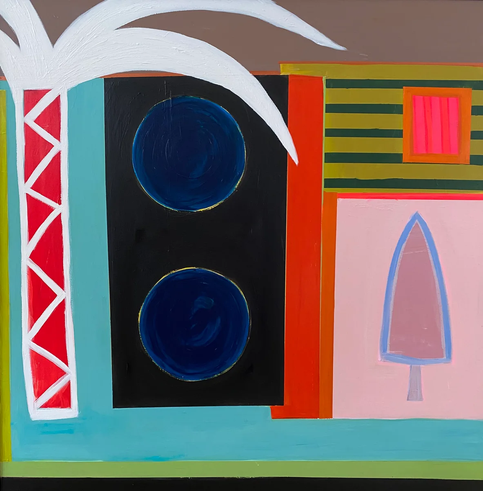
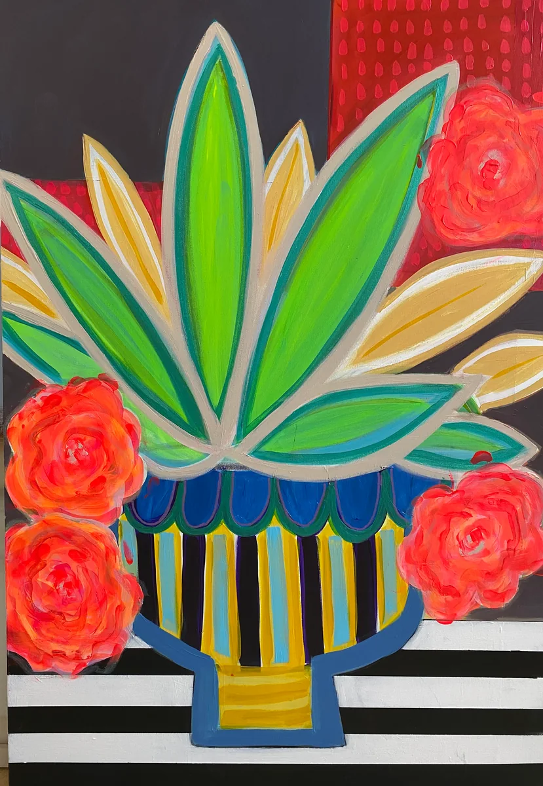

Carmel Marrinan
Works
6 artworks

Over the river2025 · Acyrlic on canvas · 120 × 120 × 4 cm€3,250 House in the Garden2025 · Acyrlic on canvas · 100 × 100 × 4 cm€1,950
House in the Garden2025 · Acyrlic on canvas · 100 × 100 × 4 cm€1,950 Dos Palmas2024 · Acyrlic on canvas · 120 × 120 × 4 cm€2,950
Dos Palmas2024 · Acyrlic on canvas · 120 × 120 × 4 cm€2,950
Two blue Pools2026 · Acyrlic and Ink · 120 × 120 cm€2,950 Night Garden2026 · Acrylic · 140 × 100 cm€2,950
Night Garden2026 · Acrylic · 140 × 100 cm€2,950
Silly Bunch2026 · Acrylic on canvas · 100 × 70 cm€1,750
About Carmel
Carmel Marrinan former Gallerist and Designer now a full time expressionist artist working in both in her studio in Dublin and West Cork where she spends much of her time .
Recalling the pictorial tendencies of the Fauves and the Expressionists of the first half 20th century Carmel creates a new representation of perceived reality emphasising the expressive and symbolic function of colour .Carmel’s work is instantly recognisable with her bold brushstrokes and joyful depictions.Colour becoming the absolute protagonist of her work creating a joyous observation of this beautiful world we inhabit.
Inspiration comes from her travels particularly Italy and her time spent in West Cork .
Carmel’s has her work is held in Private collections throughout Europe and the UK . She has completed notable corporate commissions such as the multi award winning Newmarket Yards in Dublin 8 through Reddy Architecture.
She has exhibited extensively in Ireland with her work currently available in The Oriel Gallery in Dublin and Gallery 1608 in Co Antrim.
Interested in Carmel Marrinan's work?
Send an enquiry through PlotArt and we'll put you in touch with the artist.
Enquire through PlotArt